Bước đầu tiên bạn phải đăng ký là một nhà phát triển Apple(Apple Developer).
- chú ý: Để trở thành Apple Deverloper là free nhưng để trở thành iOS Developer bạn phải trả cho apple $99/năm. 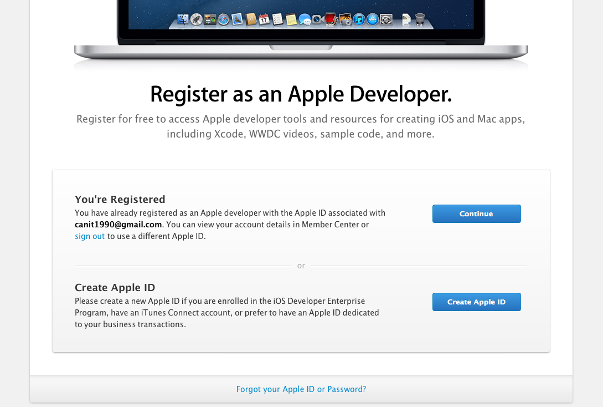
Tạo tài khoản Apple
Đầu tiên bạn phải tạo AppleID
khi tạo xong bạn hãy login bằng Apple ID vừa tạo.
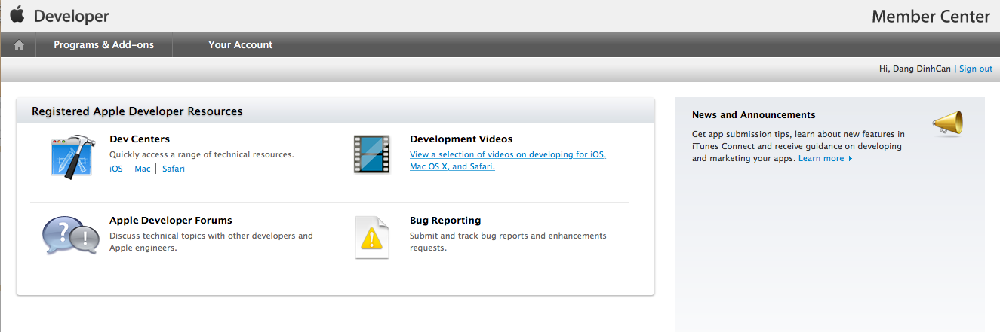 Bạn Click vào Dex Centers/iOS 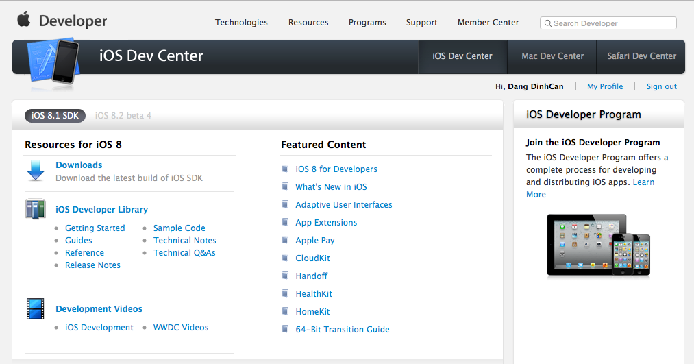
Tiếp theo chọn Join the iOS Develop Program
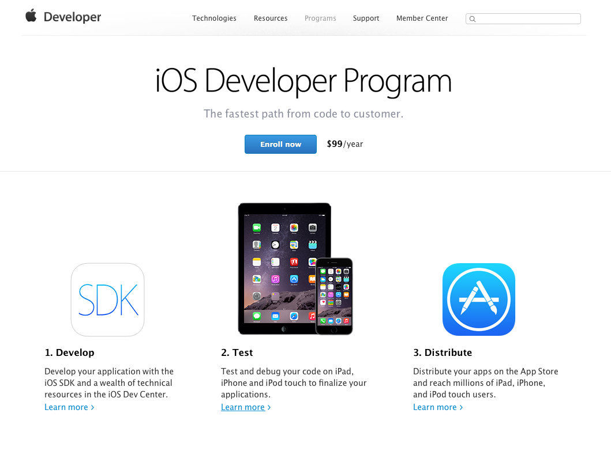
Bước tiếp theo bạn phải nhập thông tin tài khoản visa: link http://www.raywenderlich.com/8003/how-to-submit-your-app-to-apple-from-no-account-to-app-store-part-1
iOS provisioning Portal
Như chúng ta đã biết , một thiết bị iOS không Jailbroken chỉ có thể chạy các ứng dụng đã được phê duyệt bởi Apple trên App store.
Có hai lọai profiles - Development profiles (Dùng để test app trên thiết bị thực, nó được gắn với các thiệt bị cụ thể, do đó, các ứng dụn có thẻ chạy trên các thiết bị này). - Distribution profiles (Dùng để upload App lên app store, Ứng dụng có thể chạy trên tất cacr các thiết bị iOS của Apple).
iTunes Connect
iTunes Connect là hệ thống bạn sẽ sử dụng để submit app của bạn. Đây là nơi bạn sẽ đăng ký một ứng dụng mới, nhập mô tả và ảnh chụp màn hình của ứng dụng, chọn giá và configure game center và in-app purchases. Đây cũng là bạn sễ sử dụng quản lý các ứng dụng cũng như các vấn đề về tài chính.
Certificates, Device Registration, and Profiles
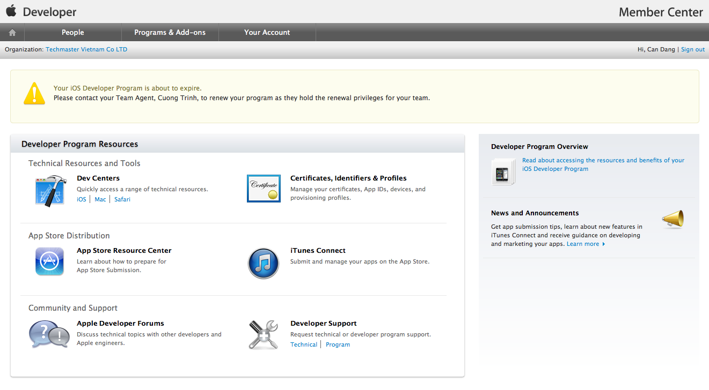 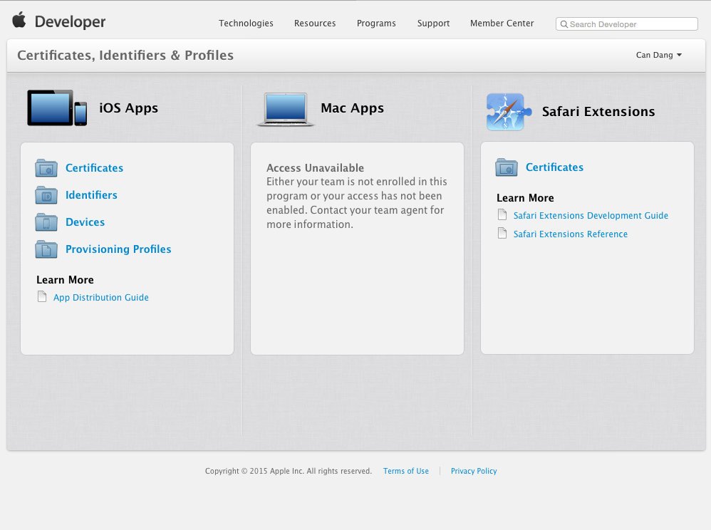
Certificates
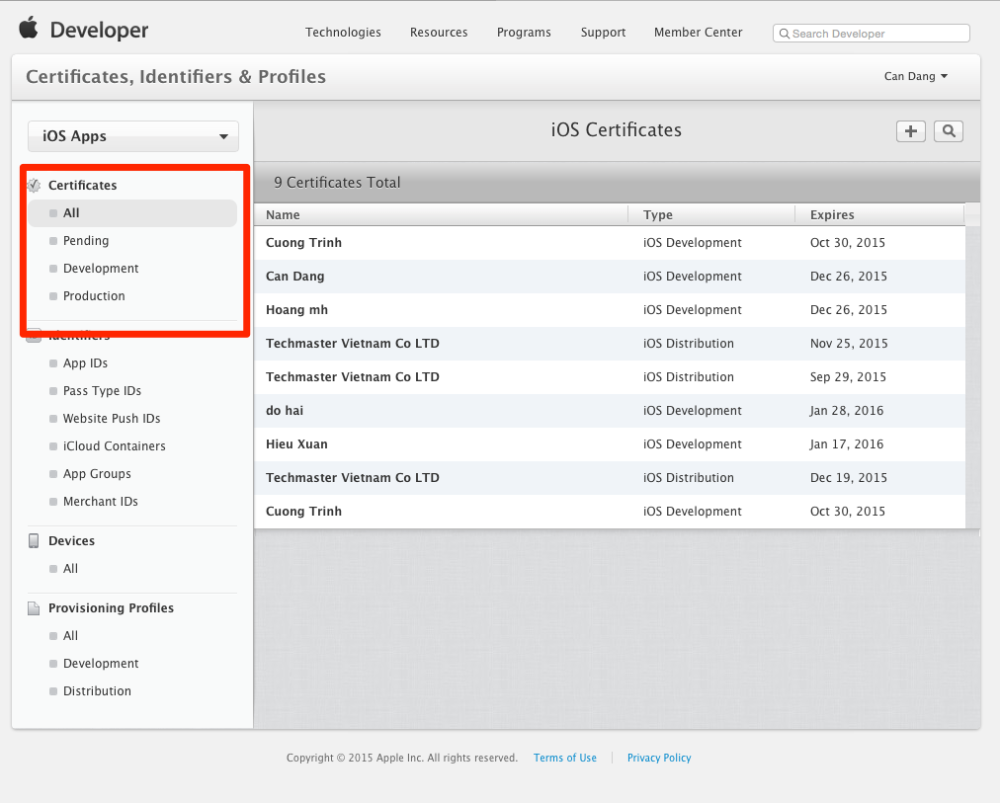
Trong phần tiếp theo của hướng dẫn này, chúng ta sẽ sử dụng iOS Provisioning Portal để thiết lập các thông tin cần thiết để triển khai các ứng dụng của chúng tôi để thiết bị của chúng tôi (và sau đó là App Store). Lưu ý rằng có một cách đơn giản để làm điều này trong Xcode gọi là tự động thiết bị dự phòng, mà chúng tôi sẽ giới thiệu trong phần hai của loạt bài này. Nhưng bây giờ, tôi sẽ đưa bạn qua các bước quá trình bước. Bạn sẽ hiểu được cách thức làm việc tốt hơn theo cách này, đó là thông tin đặc biệt quan trọng cần biết khi nộp vào App Store. Nếu bạn vẫn còn có trang iOS Dev Center của bạn ở phía trước của bạn, chỉ cần nhấp vào liên kết trên góc trên bên phải, hoặc đi
Device Registration
Quản lý các thiết bị test trong quá trình phát triển Ứng dụng. 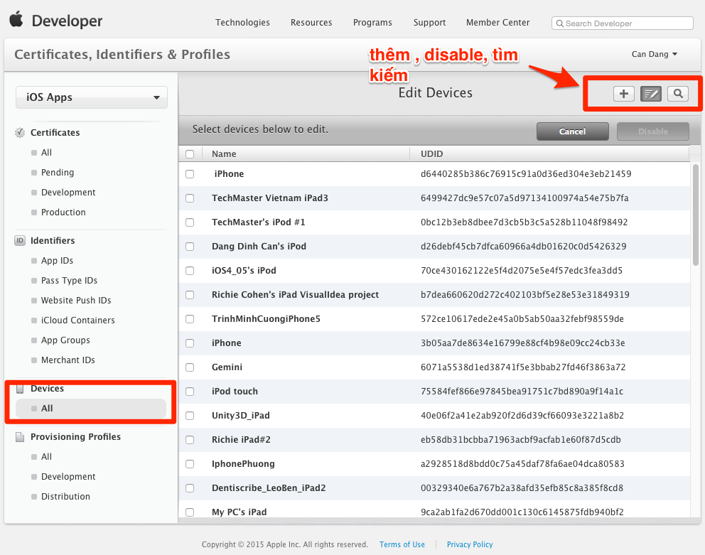
Bạn cần phải lấy UDID trên thiết bị mà bạn muốn chạy ứng dụng của bạn (nếu khách hàng ở cách xa bạn, họ muốn trải nghiệm ứng dụng của họ mà bạn không muốn gửi code làm thế nào? Rất đơn giản bạn chỉ cần UDID thiết bị của khác hàng thêm vào muc device add nó và tạo lại provisioning build lại app dụng testflight để gửi ứng dụng tới thiết bị của khác hàng). Bạn dùng iTunes để hiển thị UDID.
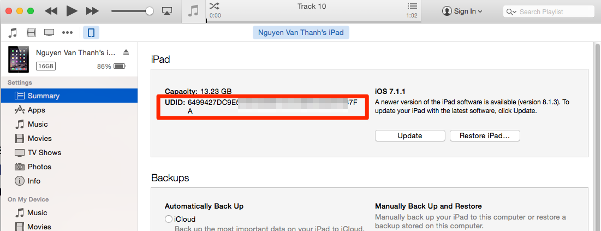
Thêm mới một Device
Trở lại browser Click "+" button. 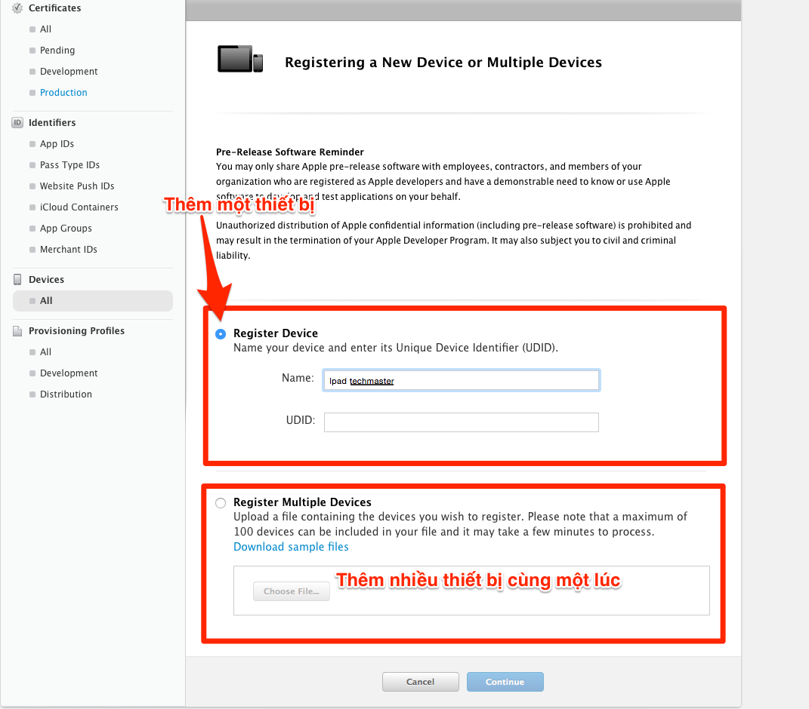
App ID Provisioning
Sau khi thực hiện xong các bước trên chúng ta bắt đầu tạo provisioning. Nó là nơi tổng hợp các thông tin trên và được import trong xcode để xác thực các thông tin trên.
Đàu tiên bạn click vào"Provisioning" thanh menu bên trái
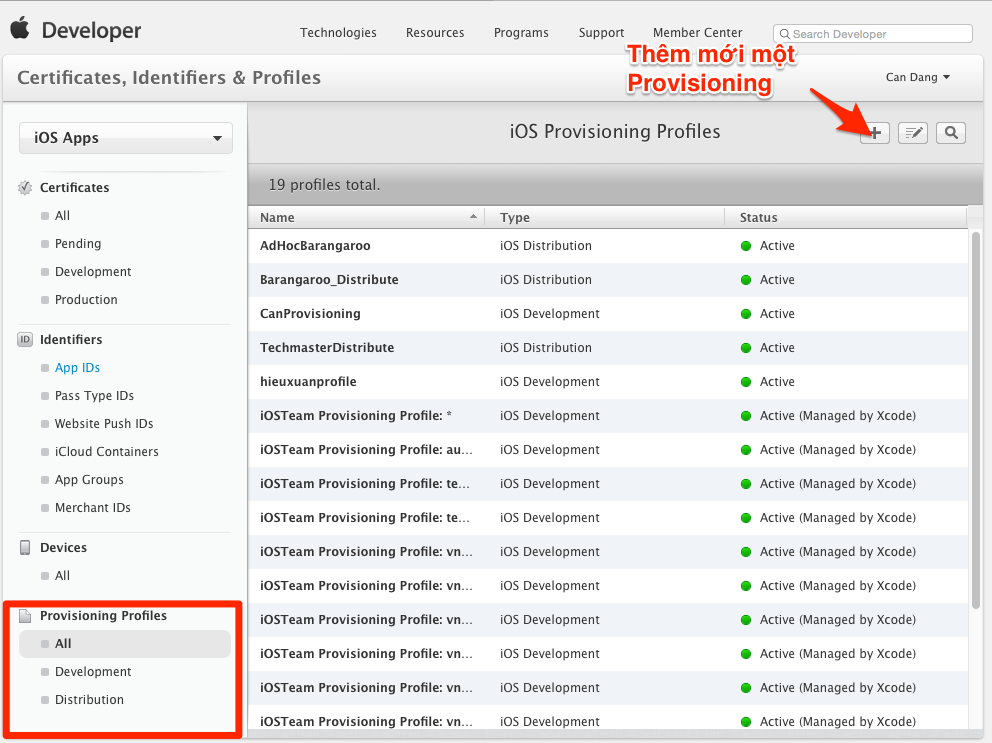
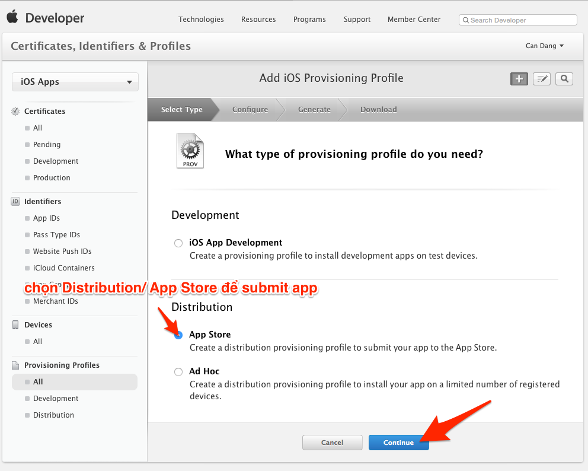
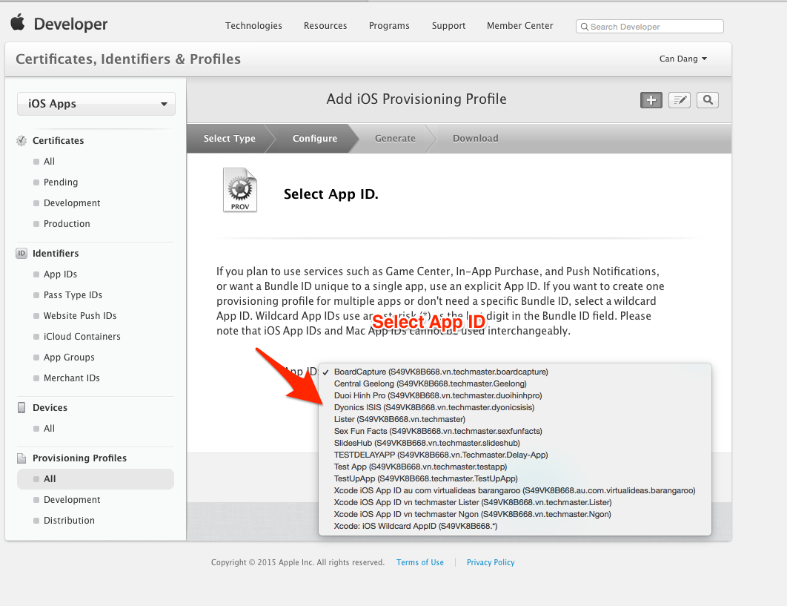
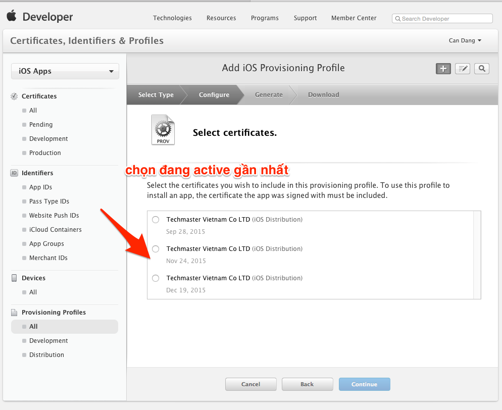
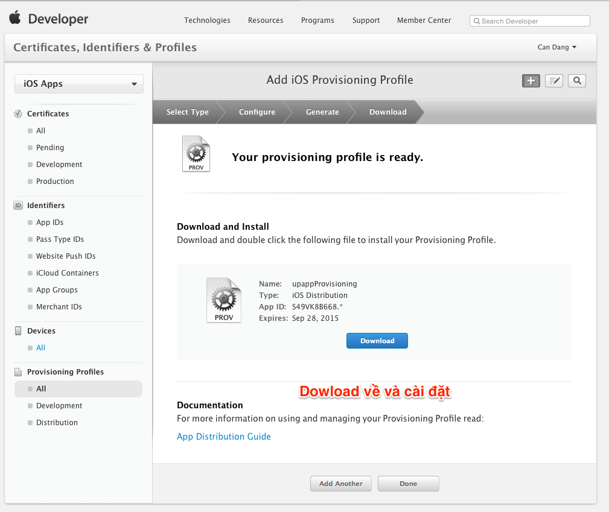